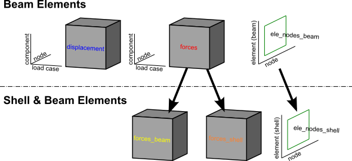
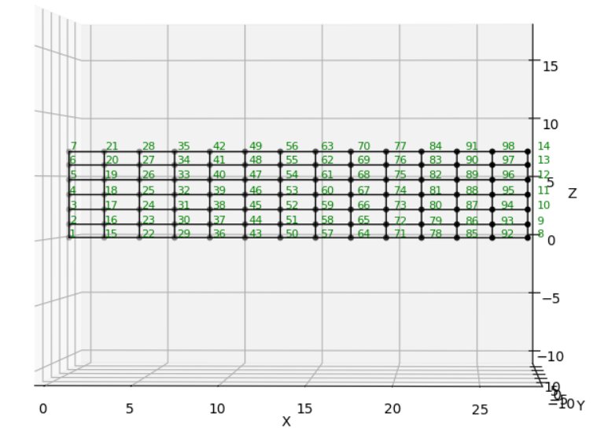
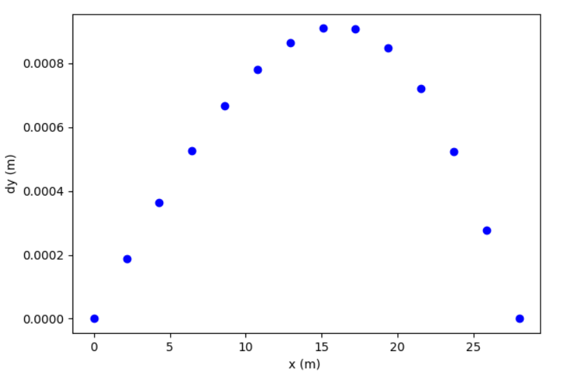
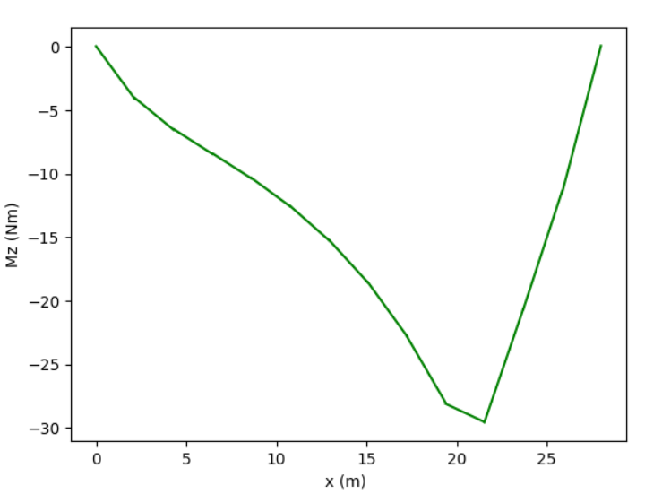

Working with results#
For all example code on this page, ospgrillage is imported as og
import ospgrillage as og
Extracting results#
After analysis, results are obtained using
get_results().
all_result = example_bridge.get_results()
patch_result = example_bridge.get_results(load_case="patch load case")
The first call returns results for every load case; the second filters to one.
What is an xarray Dataset?#
The returned object is an xarray Dataset — think of it as a multi-dimensional, labelled table. Rather than accessing data by integer index (row 3, column 7), you access it by name (Loadcase="Barrier", Component="Mz_i"). This makes result queries self-describing and much less error-prone.
The Dataset contains five named data variables:
Variable |
Axes (dimensions) |
Contents |
|---|---|---|
|
Loadcase x Node x Component |
Translations (x, y, z) and rotations (theta_x, theta_y, theta_z) at each node |
|
Loadcase x Node x Component |
Velocities (dx, dy, dz) and angular velocities (dtheta_x/y/z) |
|
Loadcase x Node x Component |
Accelerations (ddx, ddy, ddz) and angular accelerations |
|
Loadcase x Element x Component |
Internal forces (Vx, Vy, Vz, Mx, My, Mz) at each element end (_i, _j) |
|
Element x Nodes |
Which node tags (i, j) belong to each element |
For a Shell & Beam Elements — shell_beam, forces are split into forces_beam / forces_shell
and element connectivity into ele_nodes_beam / ele_nodes_shell.
Additionally, stresses_shell (Loadcase x Element x Stress) contains
shell section stress resultants at 4 Gauss points — 8 components per
point (N11, N22, N12, M11, M22, M12, Q13, Q23) giving 32 values per
element. See Shell contour plots (plot_srf) for visualisation.
Printing all_result shows the structure:
<xarray.Dataset>
Dimensions: (Component: 18, Element: 142, Loadcase: 5, Node: 77, Nodes: 2)
Coordinates:
* Component (Component) <U7 'Mx_i' 'Mx_j' 'My_i' ... 'theta_y' 'theta_z'
* Loadcase (Loadcase) <U55 'Barrier' ... 'single_moving_point at glob...'
* Node (Node) int32 1 2 3 4 5 6 7 8 9 ... 69 70 71 72 73 74 75 76 77
* Element (Element) int32 1 2 3 4 5 6 7 ... 136 137 138 139 140 141 142
* Nodes (Nodes) <U1 'i' 'j'
Data variables:
displacements (Loadcase, Node, Component) float64 nan nan ... -4.996e-10
forces (Loadcase, Element, Component) float64 36.18 -156.9 ... nan
ele_nodes (Element, Nodes) int32 2 3 1 2 1 3 4 ... 32 75 33 76 34 77 35
Each line of Coordinates lists the labels along one dimension. Loadcase lists
every load case name; Component lists every result quantity; Node and Element
list the integer tags from the OpenSees model.
Figure 1 illustrates the overall dataset structure.

Extracting the data variables#
disp_array = all_result.displacements # nodal displacements & rotations
force_array = all_result.forces # element end forces
ele_array = all_result.ele_nodes # element->node connectivity
Available force and displacement components#
Each DataArray has its own Component coordinate. To see the labels:
disp_array.coords['Component'].values
# array(['x', 'y', 'z', 'theta_x', 'theta_y', 'theta_z'])
force_array.coords['Component'].values
# array(['Vx_i', 'Vy_i', 'Vz_i', 'Mx_i', 'My_i', 'Mz_i',
# 'Vx_j', 'Vy_j', 'Vz_j', 'Mx_j', 'My_j', 'Mz_j'])
Suffix _i / _j denotes the start / end node of the element respectively.
Selecting results by label#
Use xarray’s .sel() to pick results by name, and .isel() to pick by integer position:
# All nodes, one component — vertical displacement
disp_array.sel(Component='y')
# One load case, one node
disp_array.sel(Loadcase="patch load case", Node=20)
# One load case, several elements
force_array.sel(Loadcase="Barrier", Element=[2, 3, 4])
# One component across all load cases
force_array.sel(Component='Mz_i')
For results from a Moving load, each increment is stored as a separate load case
named automatically as "<load name> at global position [x,y,z]". You can select
these by full name or by position:
# Select by the auto-generated name
by_name = force_array.sel(Loadcase="patch load case at global position [0,0,0]")
# Select by integer index (0 = first increment)
by_index = force_array.isel(Loadcase=0)
Note
For information on the full range of indexing and selection operations available on DataArrays, see the xarray indexing documentation.
Load combinations#
Load combinations are computed on the fly in
get_results() by passing a combinations
dictionary: keys are load case name strings and values are load factors.
ospgrillage multiplies each load case by its factor and sums the results.
comb_dict = {"patch_load_case": 2, "moving_truck": 1.6}
comb_result = example_bridge.get_results(combinations=comb_dict)
print(comb_result)
<xarray.Dataset>
Dimensions: (Component: 18, Element: 142, Loadcase: 3, Node: 77, Nodes: 2)
Coordinates:
* Component (Component) <U7 'Mx_i' 'Mx_j' 'My_i' ... 'theta_y' 'theta_z'
* Node (Node) int32 1 2 3 4 5 6 7 8 9 ... 69 70 71 72 73 74 75 76 77
* Element (Element) int32 1 2 3 4 5 6 7 ... 136 137 138 139 140 141 142
* Nodes (Nodes) <U1 'i' 'j'
* Loadcase (Loadcase) <U55 'moving_truck at global position [2...'
Data variables:
displacements (Loadcase, Node, Component) float64 nan nan ... 0.0 7.688e-05
forces (Loadcase, Element, Component) float64 36.18 -156.9 ... nan
ele_nodes (Loadcase, Element, Nodes) int32 6 9 3 6 ... 228 102 231 105
When a combination mixes static and moving load cases, the factored static load case is added to each increment of the moving load.
Load envelopes#
A load envelope finds the maximum (or minimum) of a chosen result component across
all load cases. Use create_envelope() to build an
Envelope object, then call .get():
envelope = og.create_envelope(ds=comb_result, load_effect="y", array="displacements")
disp_env = envelope.get()
print(disp_env)
By default get() returns, for each node, the maximum value of vertical
displacement y:
<xarray.DataArray 'Loadcase' (Node: 77, Component: 18)>
array([[nan, nan, nan, ...,
'single_moving_point at global position [2.00,0.00,2.00]', ...],
...],
dtype=object)
Coordinates:
* Component (Component) <U7 'Mx_i' 'Mx_j' 'My_i' ... 'theta_y' 'theta_z'
* Node (Node) int32 1 2 3 4 5 6 7 8 9 10 ... 69 70 71 72 73 74 75 76 77
For more options see create_envelope().
Saving and loading results#
Results can be saved to a NetCDF
file — the standard binary format for labelled multi-dimensional data — by
passing the save_filename keyword to
get_results():
# Save while retrieving
results = example_bridge.get_results(save_filename="my_results.nc")
# Also works with load combinations
comb = example_bridge.get_results(
combinations={"Dead load": 1.2, "SIDL": 1.5},
save_filename="combination_results.nc",
)
This writes the full xarray Dataset — including node coordinates and
member-element connectivity — to a .nc file in the current working
directory.
Loading saved results#
To reload saved results later, use xarray directly:
import xarray as xr
reloaded = xr.open_dataset("my_results.nc")
The reloaded Dataset has the same structure (displacements, forces,
ele_nodes, etc.) so all the selection and envelope operations described
above work identically.
Plotting from a saved file#
The saved file is self-contained: it includes the node coordinates and
member mappings needed by the plotting functions. Use
model_proxy_from_results() to create a
lightweight proxy that stands in for the original grillage model:
import xarray as xr
import ospgrillage as og
ds = xr.open_dataset("my_results.nc")
proxy = og.model_proxy_from_results(ds)
# All plotting functions work with the proxy
og.plot_bmd(proxy, ds, backend="plotly")
og.plot_sfd(proxy, ds, backend="plotly")
og.plot_def(proxy, ds, backend="plotly")
og.plot_tmd(proxy, ds, backend="plotly")
Note
The proxy supports force diagrams and deflected shapes. For the full
model geometry visualisation (plot_model())
you still need the original :class:~ospgrillage.osp_grillage.OspGrillage
object.
Viewing results in the GUI#
The ospgui application can open .nc files directly via
File > Open Results (.nc) (Ctrl+O). This switches to a results viewer
with interactive BMD, SFD, TMD, and deflection tabs, plus loadcase and
member-filter controls.
To generate test .nc files for all three mesh types (Oblique, GMS,
Ortho), run::
python tests/generate_test_results.py
Plotting results#
Model visualisation#
Use plot_model() to inspect the mesh geometry
before or after analysis:
og.plot_model(bridge_28) # matplotlib plan view
og.plot_model(bridge_28, backend="plotly") # interactive 3D
og.plot_model(bridge_28, show_node_labels=True) # with node tags
Post-processing results#
ospgrillage includes a dedicated post-processing module for force diagrams, deflected shapes, and envelopes across multiple load cases.
Note
The post-processing module supports force diagrams and deflected shapes for
beam-based model types (beam_only and beam_link).
For this section, we refer to an exemplar 28 m super-T bridge (Figure 2). The
grillage object is named bridge_28.

To plot deflection from the displacements DataArray use
plot_def(), specifying a grillage member name:
og.plot_def(bridge_28, results, members="exterior_main_beam_2")

To plot internal forces from the forces DataArray use
plot_force():
og.plot_force(bridge_28, results, member="exterior_main_beam_2", component="Mz")

Convenience plotting functions#
For the most common diagrams, convenience wrappers are provided that default to
plotting all member groups when no member is specified:
og.plot_bmd(bridge_28, results) # bending moment diagram (Mz)
og.plot_sfd(bridge_28, results) # shear force diagram (Fy)
og.plot_def(bridge_28, results) # vertical deflection (y)
Each returns a list of figures (one per member group). Pass
member="interior_main_beam" to plot a single member instead.
Selecting member groups#
The member parameter accepts a string for a single member, or a
Members bitflag to plot any combination
of groups:
# Plot only longitudinal members
og.plot_bmd(bridge_28, results, member=og.Members.LONGITUDINAL, backend="plotly")
# Combine individual members with |
og.plot_bmd(bridge_28, results,
member=og.Members.EDGE_BEAM | og.Members.INTERIOR_MAIN_BEAM,
backend="plotly")
# Plot everything (the default for plotly)
og.plot_bmd(bridge_28, results, member=og.Members.ALL, backend="plotly")
Available individual flags:
Flag |
Member name string |
|---|---|
|
|
|
|
|
|
|
|
|
|
|
|
|
|
Pre-defined composites: LONGITUDINAL (all four longitudinal types),
TRANSVERSE (transverse slab + start/end edges), ALL (everything).
Customising plots#
All plotting functions accept keyword arguments for common customisations:
# Wide figure, values in kN*m, custom title, red with no fill
og.plot_bmd(bridge_28, results,
member="interior_main_beam",
figsize=(12, 4),
scale=0.001,
title="Bending Moment (kN*m)",
color="r",
fill=False)
To compose multi-panel figures, pass an existing matplotlib Axes:
import matplotlib.pyplot as plt
fig, axes = plt.subplots(1, 3, figsize=(18, 4))
og.plot_bmd(bridge_28, results, member="interior_main_beam", ax=axes[0])
og.plot_sfd(bridge_28, results, member="interior_main_beam", ax=axes[1])
og.plot_def(bridge_28, results, member="interior_main_beam", ax=axes[2], color="g")
fig.tight_layout()
The full set of keyword arguments is:
Kwarg |
Default |
Description |
|---|---|---|
|
matplotlib default |
Figure size in inches |
|
|
Existing Axes (matplotlib) or Figure (Plotly) to draw on |
|
|
Multiply values by this factor (e.g. |
|
auto |
Custom title string, or |
|
|
Line colour |
|
|
Shade the area under force diagrams |
|
|
Fill / trace transparency |
|
|
Call |
Interactive 3D plots (Plotly)#
For interactive rotation — especially useful in Jupyter notebooks — pass
backend="plotly":
pip install ospgrillage[gui] # includes plotly
og.plot_bmd(bridge_28, results, backend="plotly")
og.plot_sfd(bridge_28, results, backend="plotly")
og.plot_def(bridge_28, results, backend="plotly")
Each returns a single Plotly Figure that
renders interactively in Jupyter notebooks and in browser windows from the
terminal. The figure can be further customised using the standard Plotly
API. The GUI auto-detects plotly and uses it by default when available.
Shell contour plots (plot_srf)#
For shell_beam models, plot_srf()
renders contour plots over the shell mesh. It supports three families of
component:
Family |
Components |
Description |
|---|---|---|
Shell forces |
|
Element end forces averaged to nodes |
Displacements |
|
Nodal translations (x, y, z) |
Stress resultants |
|
Section stress resultants averaged from Gauss points |
Note
plot_srf requires a shell_beam model. The results Dataset must
contain ele_nodes_shell and node_coordinates. Stress resultant
components additionally require stresses_shell (generated automatically
by ospgrillage ≥ 0.6.0).
Basic usage#
plot_srf takes a results Dataset (not a grillage object) as its first
argument:
results = bridge.get_results(save_filename="bridge_results.nc")
# Shell bending moment about the x-axis
og.plot_srf(results, component="Mx")
# Vertical displacement contour
og.plot_srf(results, component="Dy")
# Membrane force N11 (stress resultant)
og.plot_srf(results, component="N11")
Choosing a loadcase#
By default the first loadcase is plotted. Pass loadcase= to select a
specific one:
og.plot_srf(results, component="Mx", loadcase="Dead Load")
Shell force components#
Shell element end forces (Vx–Mz) are extracted from forces_shell
and averaged at shared nodes:
og.plot_srf(results, "Mx") # bending moment about x
og.plot_srf(results, "Vy") # shear force in y
og.plot_srf(results, "Mz") # torsion
Displacement components#
Displacement contours (Dx, Dy, Dz) are read directly from the
nodal displacements array:
og.plot_srf(results, "Dy") # vertical deflection
og.plot_srf(results, "Dy", colorscale="Viridis") # sequential palette
Tip
Use a sequential colorscale like Viridis for displacements
(single-sign data) and a diverging colorscale like RdBu_r
(the default) for forces and stress resultants (signed data that
crosses zero).
Stress resultant components#
Shell section stress resultants are extracted via OpenSeesPy’s
eleResponse(tag, "stresses"), which returns 8 values at each of the
4 Gauss points for a 4-node shell element:
Notation |
Meaning |
|---|---|
|
Membrane force per unit length in local 1-direction |
|
Membrane force per unit length in local 2-direction |
|
In-plane shear force per unit length |
|
Bending moment per unit length about local 2-axis |
|
Bending moment per unit length about local 1-axis |
|
Twisting moment per unit length |
|
Transverse shear force per unit length in 1–3 plane |
|
Transverse shear force per unit length in 2–3 plane |
og.plot_srf(results, "M11") # plate bending about local 2-axis
og.plot_srf(results, "N11") # membrane force in local 1-direction
og.plot_srf(results, "Q13") # transverse shear
Composing shell contours with beam diagrams#
A common workflow is to overlay the beam BMD/SFD on top of a shell
contour. Pass the Plotly figure returned by plot_srf as the ax=
argument to any beam plot function:
# 1. Create the shell contour (show=False to keep the figure object)
fig = og.plot_srf(results, "Mx", backend="plotly", show=False)
# 2. Create a model proxy for beam plotting
proxy = og.model_proxy_from_results(results)
# 3. Overlay the BMD onto the same figure
og.plot_bmd(proxy, results, backend="plotly", ax=fig)
This works with plot_bmd, plot_sfd, plot_tmd, and plot_def.
Colorscale guidance#
Data type |
Recommended colorscale |
Why |
|---|---|---|
Forces / moments ( |
|
Diverging — highlights sign change |
Stress resultants ( |
|
Diverging — signed data |
Displacements ( |
|
Sequential — typically single-sign |
og.plot_srf(results, "Mx", colorscale="RdBu_r") # diverging (default)
og.plot_srf(results, "Dy", colorscale="Viridis") # sequential
og.plot_srf(results, "N11", colorscale="Plasma") # alternative sequential
Additional keyword arguments#
Kwarg |
Default |
Description |
|---|---|---|
|
|
|
|
|
Plotly colorscale name (or matplotlib |
|
|
Display the colour bar legend |
|
|
Surface opacity (0–1) |
|
|
Display the figure immediately |
|
|
Existing Plotly |
|
auto |
Custom title string, or |
|
|
Figure size as |
Using the GUI shell contour tab#
When you open a shell_beam results file in the GUI
(File > Open Results (.nc)), a Shell Contour tab appears
alongside the BMD, SFD, TMD, and Deflection tabs.
The results panel on the left provides three controls:
Component — select any of the 17 available components (
Mx–Mz,Dx–Dz,N11–Q23)Colorscale — choose from
RdBu_r,Viridis,Plasma,Cividis, orTurboOverlay — optionally composite a beam diagram (
BMD,SFD,TMD, orDeflection) on top of the shell contour
The contour controls are greyed out when a non-contour tab is selected and automatically enabled when you switch to the Shell Contour tab. For non-shell models, the tab and controls are hidden entirely.